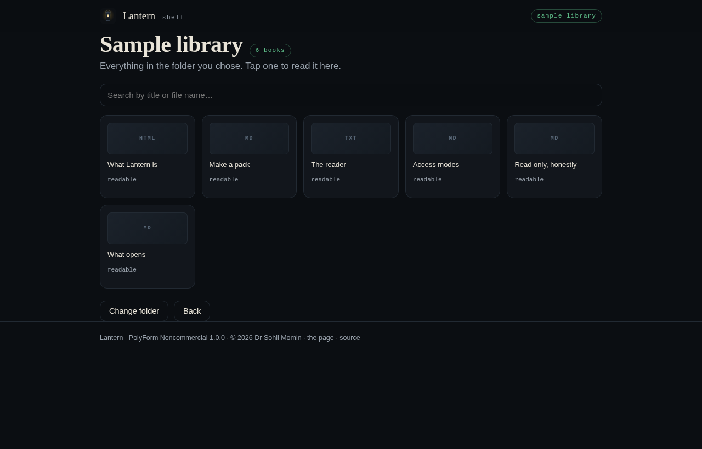

internet-in-a-box, as an app
One device on your Wi-Fi becomes a content server. Everyone else opens a browser and reads — and searches — a library that never asks the internet for anything.
A Node HTTP server that serves the page, the library and the search index. Copy it to a laptop, a Raspberry Pi, or a phone that runs Node. Nothing to install.
Every imported file is hashed and measured. On every load those hashes are checked again, and a pack that no longer matches is quarantined instead of served with pages missing.
No app to install, no account to make. A phone joins the Wi-Fi, opens the address the host prints, and searches. That is the whole client.
| Situation | What Lantern does |
|---|---|
| A path tries to leave a pack | Refused at import and refused again at request, with 403. |
| The disk is full or read-only | The pack is not added, the files that did not land are named, and nothing half-written is left behind. |
| A pack no longer matches its manifest | Moved to .quarantine/, reported in the Packs card, and neither served nor searchable. |
| No peers, no internet | Nothing changes. The library opens on the host and says how many documents it holds. |
| A bundle that is not JSON | Refused with the reason shown, and the library keeps serving. |
Every row is asserted in the test suite, not promised in prose.

It lists it. PDF and EPUB open in the bundled viewers once the desktop build is running.
The demo runs the same lib/search.js over a pre-built copy of the starter pack —
nothing is fetched from anywhere.

One person's work: no company, no ads, no tracking, no paid tier. If it saved you an afternoon, a contribution keeps the next one coming — any amount, or none.